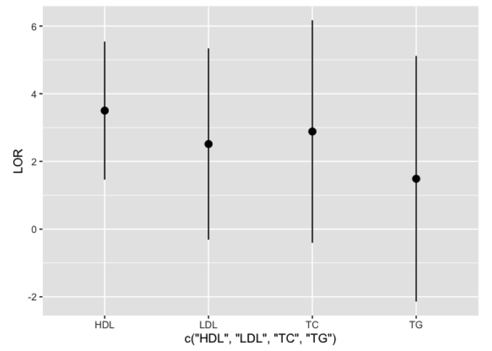

Last updated: 2019-11-17
Checks: 7 0
Knit directory: weekly_report20190715-21/
This reproducible R Markdown analysis was created with workflowr (version 1.4.0). The Checks tab describes the reproducibility checks that were applied when the results were created. The Past versions tab lists the development history.
Great! Since the R Markdown file has been committed to the Git repository, you know the exact version of the code that produced these results.
Great job! The global environment was empty. Objects defined in the global environment can affect the analysis in your R Markdown file in unknown ways. For reproduciblity it’s best to always run the code in an empty environment.
The command set.seed(20190725) was run prior to running the code in the R Markdown file. Setting a seed ensures that any results that rely on randomness, e.g. subsampling or permutations, are reproducible.
Great job! Recording the operating system, R version, and package versions is critical for reproducibility.
Nice! There were no cached chunks for this analysis, so you can be confident that you successfully produced the results during this run.
Great job! Using relative paths to the files within your workflowr project makes it easier to run your code on other machines.
Great! You are using Git for version control. Tracking code development and connecting the code version to the results is critical for reproducibility. The version displayed above was the version of the Git repository at the time these results were generated.
Note that you need to be careful to ensure that all relevant files for the analysis have been committed to Git prior to generating the results (you can use wflow_publish or wflow_git_commit). workflowr only checks the R Markdown file, but you know if there are other scripts or data files that it depends on. Below is the status of the Git repository when the results were generated:
Ignored files:
Ignored: .DS_Store
Ignored: .Rhistory
Ignored: .Rproj.user/
Ignored: code/.DS_Store
Ignored: code/QQplots/.ipynb_checkpoints/
Note that any generated files, e.g. HTML, png, CSS, etc., are not included in this status report because it is ok for generated content to have uncommitted changes.
These are the previous versions of the R Markdown and HTML files. If you’ve configured a remote Git repository (see ?wflow_git_remote), click on the hyperlinks in the table below to view them.
| File | Version | Author | Date | Message |
|---|---|---|---|---|
| html | ede59b9 | chj1ar | 2019-11-17 | Build site. |
| Rmd | ae3a7b1 | chj1ar | 2019-11-17 | wflow_publish(files = "analysis/*") |
| html | 1be5e27 | chj1ar | 2019-08-15 | Build site. |
| Rmd | 2acb785 | chj1ar | 2019-08-15 | wflow_publish(files = c(“analysis/colocalization.Rmd”, |
This part is based on the paper ‘Integrating molecular QTL data into genome-wide genetic association analysis: Probabilistic assessment of enrichment and colocalization’ with the software Enloc.
The roles of GWAS in disease etiology remain poorly understood. Linking molecular QTLs to GWAS is important to interpret the biological relevance of GWAS results. Colocalizing genetic variants that jointly affect both molecular and organismal phenotypes provides a starting point for exploring the role of genetic variants in disease etiology. We therefore perform colocalization analysis of eQTLs from different tissues and schizophrenia (SCZ) GWAS to identify genes in specific tissues which play an important role in molecular pathways of complex traits. Specifically, we perform enrichment analysis, GWAS fine-mapping, and colocalization analysis. The enrichment analysis aims to estimate the enrichment level of eQTL to GWAS, and so the GWAS fine-mapping can be more accurate with eQTL information and the enrichment estimation. The colocalization analysis is aided by both the enrichment estimation and the GWAS fine-mapping results.
For the basic framework, we use a multiple linear regression model to describe the associations of a quantitative trait with p candidate SNPs and n unrelated samples, i.e., \(y = \sum_{i=1}^{p} \beta_i g_i + e\), and we will obtain \(\beta_i\), the genetic effect of each SNP to the quantitative trait, and \(\gamma_i\), the binary causal state of each SNP, by dichotomizing its genetic effect, i.e., \(\gamma_i=\begin{cases}1, &\beta_i \neq 0 \cr 0, &otherwise\end{cases}\). The \(\gamma_i\) will be used to identify colocalized SNPs, i.e., the SNPs that are causal to both the quantitative trait and some tissue-specific gene expression.
We perform the enrichment analysis by integrating the SNP-level annotation into the association analysis by specifying a natural logistic prior for each candidate SNP. Here, we consider a special setting in which the SNP-level annotation is derived from the association status of eQTL data, and the formula is \(log \frac {P(\gamma_i = 1)}{P(\gamma_i = 0)} = \alpha_0 + \alpha_1 d_i\). Unfortunately, precise binary association status of each SNP with respect to tissue-specific gene expression is practically impossible to obtain. As a consequence, there is considerable uncertainty in the SNP-level annotation. We therefore use the posterior distribution \(P(d | Y_{qtl}, G_{qtl})\) to describe the uncertainty, and \(d_i\) can be sampled from \(P(d_i | Y_{qtl}, G_{qtl})\).
To be specific, the posterior distribution of d is derived from individual-level genotype-expression data by QTL fine-mapping. Then, there are dozens of annotations, i.e., d, sampled from the posterior distribution of d, and for each sampled annotation, the enrichment analysis stated above will be performed to generate their respective results of log odds ratio, 95% CI, etc.. The final result is generated by taking the average of the respective results of sampled annotations. In theory, it can be shown that this scheme, the so-called ‘multiple imputation’, is way better than directly using eQTL PIPs, the posterior distributions of d’s, i.e., the so-called ‘mean imputation’.
For prior specification, instead of specifying \(p_1 := P(\gamma_i = 1, d_i = 0)\), \(p_2 := P(\gamma_i = 0, d_i = 1)\) and \(p_{12} := P(\gamma_i = 1, d_i = 1)\), as commonly used, we equivalently parameterize them by specifying
\[\alpha_0 = log \frac {p_1}{1 - p_1 - p_2 - p_{12}}\]
\[\alpha_1 = log \frac {p_{12} (1 - p_1 - p_2 - p_{12})}{p_1 p_2}\]
Plus, \(\alpha_1\) is learned by whole-genome SNPs, with the idea of empirical Bayes.
Before showing the results on SCZ, it’d be better to show the correctness of the pipeline by reproducing the Figure 5 of the Enloc paper. Specifically, we performed enrichment analysis of GTEx Whole Blood eQTLs data on 4 lipid traits, namely, high density lipoprotein (HDL), low density lipoprotein (LDL), triglycerides (TG), and total cholesterol (TC), and the following figure, Figure 1, shows the results.

| Version | Author | Date |
|---|---|---|
| 1be5e27 | chj1ar | 2019-08-15 |
There is little difference from the Figure 5 of the Enloc paper, demonstrating that the pipeline should be correct.
Time limited, we failed to get the results for SCZ.
sessionInfo()R version 3.6.0 (2019-04-26)
Platform: x86_64-apple-darwin15.6.0 (64-bit)
Running under: macOS High Sierra 10.13.6
Matrix products: default
BLAS: /Library/Frameworks/R.framework/Versions/3.6/Resources/lib/libRblas.0.dylib
LAPACK: /Library/Frameworks/R.framework/Versions/3.6/Resources/lib/libRlapack.dylib
locale:
[1] en_US.UTF-8/en_US.UTF-8/en_US.UTF-8/C/en_US.UTF-8/en_US.UTF-8
attached base packages:
[1] grid stats graphics grDevices utils datasets methods
[8] base
other attached packages:
[1] png_0.1-7
loaded via a namespace (and not attached):
[1] workflowr_1.4.0 Rcpp_1.0.2 digest_0.6.20 rprojroot_1.3-2
[5] backports_1.1.4 git2r_0.26.1 magrittr_1.5 evaluate_0.14
[9] stringi_1.4.3 fs_1.3.1 whisker_0.3-2 rmarkdown_1.14
[13] tools_3.6.0 stringr_1.4.0 glue_1.3.1 xfun_0.8
[17] yaml_2.2.0 compiler_3.6.0 htmltools_0.3.6 knitr_1.23